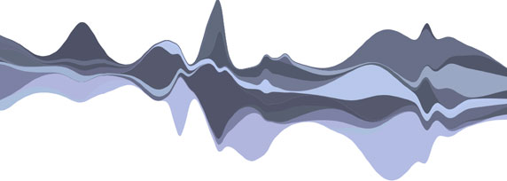

Stacked Graphs – Geometry & Aesthetics
In February 2008, the New York Times published an unusual chart of box office revenues for 7500 movies over 21 years. The chart was based on a similar visualization, developed by the first author, that displayed trends in music listening. This paper describes the design decisions and algorithms behind these graphics, and discusses the reaction on the Web. We suggest that this type of complex layered graph is effective for displaying large data sets to a mass audience. We provide a mathematical analysis of how this layered graph relates to traditional stacked graphs and to techniques such as ThemeRiver, showing how each method is optimizing a different “energy function”. Finally, we discuss techniques for coloring and ordering the layers of such graphs. Throughout the paper, we emphasize the interplay between considerations of aesthetics and legibility.
Read the Paper
“Stacked Graphs – Geometry & Aesthetics” by Lee Byron & Martin Wattenberg can be downloaded in PDF form.